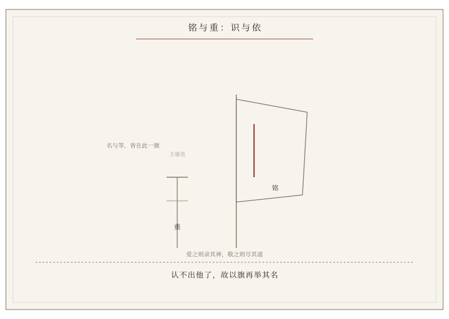

檀弓下 · 四·十八 · 第 343 课
铭，明旌也。以死者为不可别已，故以其旗识之。爱之，斯录之矣；敬之，斯尽其道焉耳。重，主道也。殷主缀重焉，去显考乃埋之。周主重彻焉。
说什么事：铭是明旌，写着死者的名。因为人死之后已无从辨别，故以其旗上的名号标识他。爱他，便记下他；敬他，便尽其道。重是主的权代。殷人作主而缀连其重，至高祖迁庙乃埋；周人作主即彻重埋之。
落在哪一层：以「识」量礼。论「一块写着名字的旗」为何是丧礼之要。
为何编在此位：上节论口中之物，此节论身上之旗。饭以实其内，铭以识其外。二事毕，死者乃「有身分」。
【经】銘，明旌也。以死者為不可別已，故以其旗識之。愛之，斯錄之矣；敬之，斯盡其道焉耳。重，主道也。殷主綴重焉，去顯考乃埋之。周主重徹焉。
【注】神明之精。／不可别，形貌不见。／谓重与奠。／始死未作主，以重主其神也。重既虞而埋之，乃后作主。《春秋传》曰：「虞主用桑，练主用栗。」／缀犹联也。殷人作主，而联其重，县诸庙也。／周人作主，彻重埋之。
【疏】案《士丧礼》「为铭各以其物」。又《司常》云：「大丧共铭旌。」注云：「王则大常。」案《司常》「王建大常，诸侯建旂，孤卿建旃，大夫士建物」，则铭旌亦然，但以尺寸易之。／案《士丧礼》士长三尺，大夫五尺，诸侯七尺，天子九尺，从遣车之差，以丧事略故也。若不命之士，则《士丧礼》云「以缁，长半幅」，长一尺；「赪末，长终幅」，长二尺，总长三尺。／「爱之，斯录之」，谓孝子思念其亲，追爱之道，故於此为重，以存录其神也。「敬之，斯尽其道焉耳」，谓於此设奠，尽其孝养之道焉耳。郑以下文有「重」及「奠」，故以此一经为下张本，故云「重与奠」也。／言始死作重，犹若吉祭木主之道。主者吉祭所以依神，在丧重亦所以依神，故云「重，主道也」。／「殷主缀重焉」者，谓殷人始殡，置重于庙庭，作虞主讫，则缀重县於新死者所殡之庙也。「周主重彻焉」者，谓周人虞而作主，而重则彻去而埋之。
铭 写在旗上的名号。
明旌 标明死者之旌。注「神明之精」，谓其昭示神明。
不可别已 无从辨别。「已」为语词。
识 记识、标识。
录 记存。
重 始死未作主时，用以依神之木。注「重，主道也」。
缀重 联缀其重于庙。
显考 高祖。迁庙至高祖，则埋其重。
彻 撤去。
铭就是明旌。因为死者已无从辨认，所以用他旗上的名号来标识他。爱他，就记下他；敬他，就为他尽这道。重，是主的权代。殷人作主之后仍联缀其重，至高祖迁庙时才埋；周人作主之后即撤重而埋之。
此章讲两件事：铭与重。一为「识」，一为「依」。
铭解决的是「认不出」：人死形貌不见，一堆丧服之中，谁是谁？故举其旗，旗上有名有等。
重解决的是「还未有主」：既葬未祔，神无可依，故立一木以依之。
两事皆为一件难处：死者从此不再是「某人」，须以物为之立一个位置。
第一层 「不可别已」：丧礼真正的难处 人死之后，最刺人的不是「他不在」，是「认不出」。
亲人之为亲，大半靠面目。面目一去，则所余者只是一具形。礼的第一应对，是给他一面旗：旗上有名，名即其人。
故铭不是装饰，是「身份的最后一处存放地」。
第二层 旗有等：尺寸即尊卑 疏详：王建大常，诸侯建旂，孤卿建旃，大夫士建物；尺寸士三尺、大夫五尺、诸侯七尺、天子九尺，「从遣车之差」。
一条旗，载两重信息：一为名，一为等。死者是谁，与死者居何位，皆在此一旗。
丧事之中，人已不能言、不能行、不能拜，唯此旗替他说完最后的身份。
第三层 「爱之，斯录之矣；敬之，斯尽其道焉耳」 此二句，郑以「重与奠」释之：爱则录其神（立重），敬则尽其道（设奠）。
爱是对「他这个人」，敬是对「这道礼」。二者不可偏：只爱而不敬，则哀而无仪；只敬而不爱，则仪而无衷。
此二句实为丧礼的总纲：一切丧仪，皆可归入「录之」与「尽其道」两类。
第四层 重与主：一个过渡的装置 始死未作主，以重主其神；既虞而埋重，乃后作主。
重是一个「临时的主」，其存在本身即承认：此刻还不到立主的时。礼容许「未完成」，并为此设一个物。
此见礼之体贴：它不催你立刻完成，它给你一个可以暂放的地方。
第五层 殷周之异：缀与彻 殷人作主而联其重，县于庙，至高祖迁庙乃埋；周人作主即彻重而埋。
一留一去，见两代之别：殷重「联」，周重「断」。殷人以为新主旧重可并存于庙，周人以为主既立则重当去。
礼之代变，多在这类「留与去」的分别上，不在一二仪节。
第六层 今日之用：名字的分量 今之丧仪，有遗像、有名牌、有签到簿、有挽联上的称谓。此皆「铭」之余。
此节提醒：这些东西不是形式，是替一个已经不能自称的人，把名字再举一次。举得准，是敬；举得乱（错名、错等、错称），是慢。
与今日何干 今人办丧，多在意排场，少在意「名写得对不对」。此节所示，恰相反：一块旗上的名与等，是丧礼最要紧的一处。名不确，则一切哀敬无所附。
| 左 | 右 |
|---|---|
| 铭 | 明旌，书死者之名 |
| 不可别已 | 形貌不见，无从辨认 |
| 以其旗识之 | 以名号标识 |
| 爱之斯录之 | 立重以存其神 |
| 敬之斯尽其道 | 设奠以尽其养 |
| 重 | 主道也，临时之依 |
| 殷主缀重 | 联而不即埋 |
| 周主重彻 | 作主即彻埋 |
| 尺寸之差 | 士三、大夫五、诸侯七、天子九 |
画一处庭中立着的一面长旗，视点平视。旗杆细长，旗面自上垂下，旗上只画一道竖的墨痕示意名号（不写具体文字），旗角有一处折。旗左立一截短木（重），木上无刻饰，只在其端有一道横线。旗与木之间不画连线，二者并立。背景留空，只在地上一道浅痕。赭色只用在旗角那处折。
